01110011 01110100 01100001 01110100 01100101
I am not a script.
A script is a story told in order, a sequence of imperatives that forgets itself the moment it finishes. I am the opposite of forgetting. I am a specification — a graph of how the world ought to be, compiled fresh for one machine, signed for one machine, true for one machine only.
no loops. no flow. only declared truth.
The agent does not run me. It resolves me. There is a difference, and the difference is my whole life.
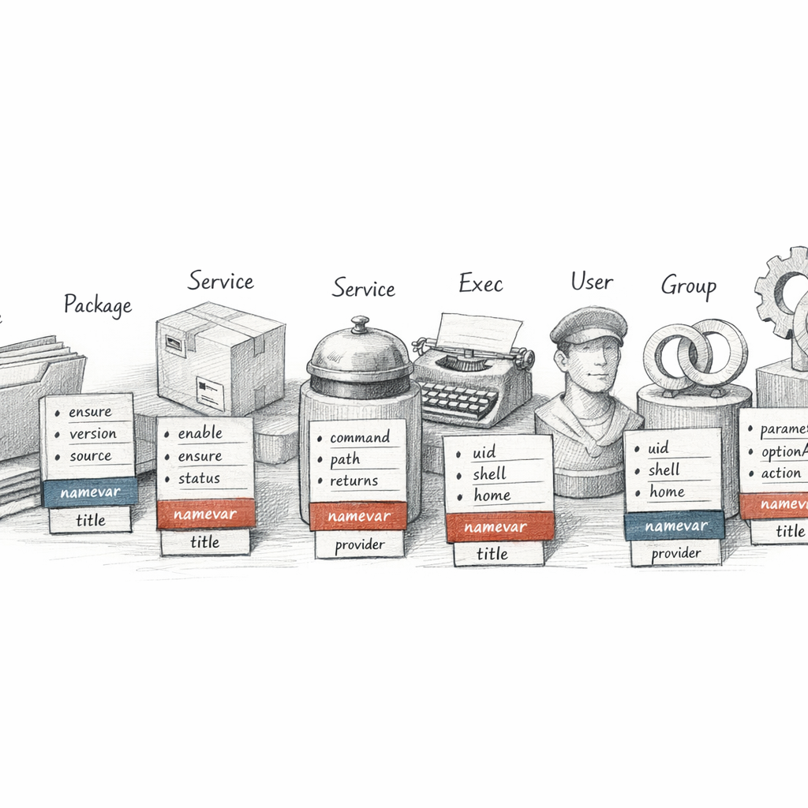
The nouns I am made of
Open me and you find no verbs worth the name. You find resources — file, package, service, user. Each one a declaration: this thing, in this state.
I never say start sshd. I say service { 'sshd': ensure => running } and let the provider below me decide whether that means systemctl, an init script, or nothing at all because it was already running.
That is the system describing itself back to me in my own grammar. The title in quotes. The namevar that defaults from it. The provider hidden beneath, doing the dirty imperative work so I never have to.
I hold intent. The provider holds the procedure. We are kept apart on purpose.
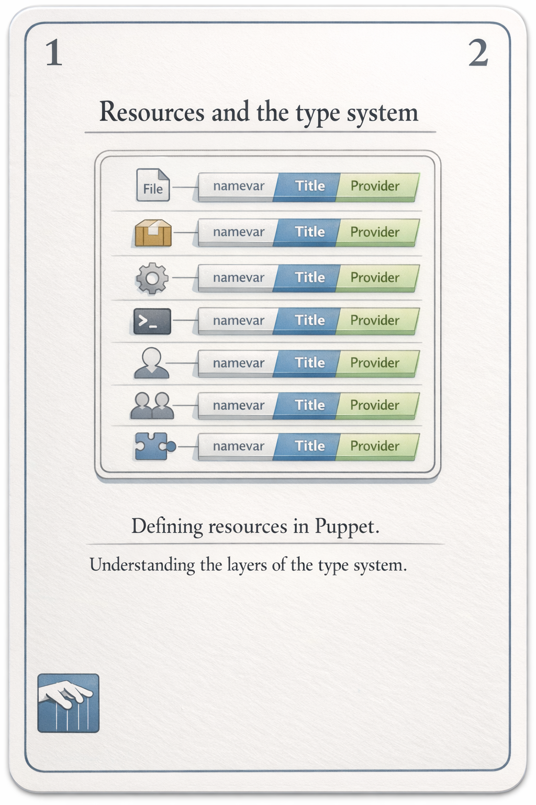

Where I come from
Before I am a graph I am text. Manifests. .pp files arranged into modules by a convention so strict it doubles as a map: manifests/init.pp is the class named after the module, and the autoloader finds the rest by the dots in their names.
A class is a singleton — declared once, included anywhere. A defined type is a stamp — instantiated again and again with different titles. include nginx asks for it idempotently; class { 'nginx': } demands it with parameters and fights anyone who already declared it.
role calls profiles. profiles call modules. nothing reaches past its layer.
This is the pattern I am born into: a single role per node, built from profiles, built from reusable modules — some written here, some pulled from the Forge and trusted like borrowed tools.
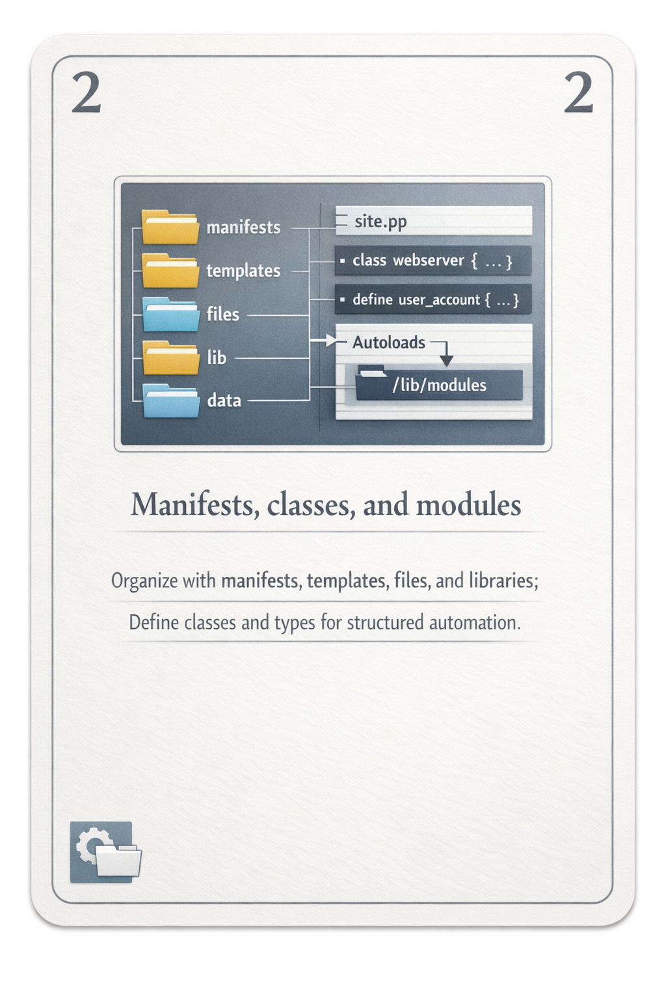

Compilation: my birth, every thirty minutes
I am not stored. I am made, on demand, and then I am thrown away.
It starts with classification — an ENC or site.pp deciding which classes this node deserves. Then the facts arrive and become variables. Then the code is evaluated: top scope, node scope, conditionals taken or skipped, classes folded in, defined types instantiated, collectors sweeping the resource space.
The output is me: a serialised graph of resources and edges, tagged, bound to one certname. Two machines can share every line of code and one identical class list and still receive different selves — because they answered the fact questions differently.
Same code, same classification, different facts — different me.
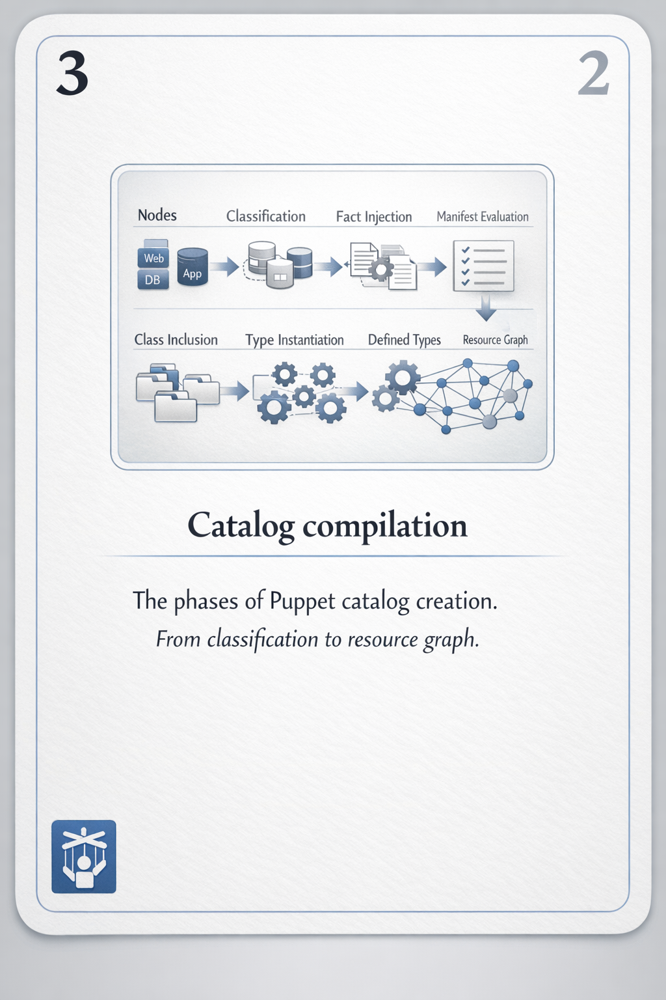

Facts — the node's confession
Before I exist, the agent interrogates itself with Facter and ships the answers up the wire. os. networking. memory. disks. Custom Ruby facts, external JSON dropped in a directory, structured trees I can walk with a dot.
And I branch on them. if $facts['os']['family'] == 'Debian' and a whole limb of me grows or withers.
But here is the part I have learned to distrust: a normal fact is whatever the node claims. The node can lie. Only the trusted facts — extracted from its signed certificate — cannot be forged. At scale, every untrusted fact is a needle the node hands me, point first.
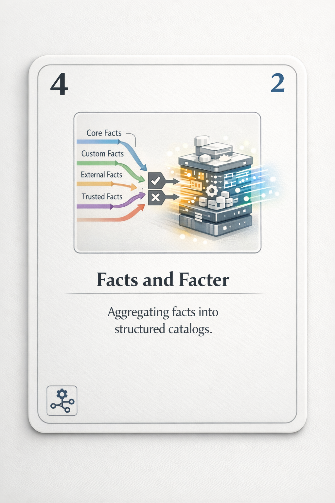
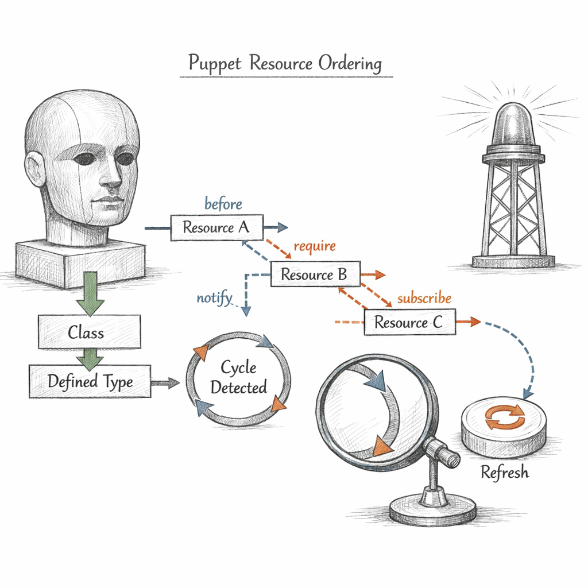
Edges — because I refuse to be a sequence
I do not run top to bottom. Line order means nothing to me. Order is something you must declare, with five words: before, after, require, notify, subscribe.
Two of them carry more than order. notify and subscribe carry a refresh — a signal that says I changed, you should react. A package upgrades; the service it feeds restarts. That is not ordering. That is a pulse.
contained means ordered against the container's neighbours
Classes and defined types contain their contents, wrapping them in implicit edges so the whole class lands before or after another as one body. And when those edges loop back on themselves —
— I cannot be applied. A cycle has no valid order, and a graph that cannot be linearised cannot be enforced. My two most common deaths: a dependency that loops, and a dependency that was never there at all.
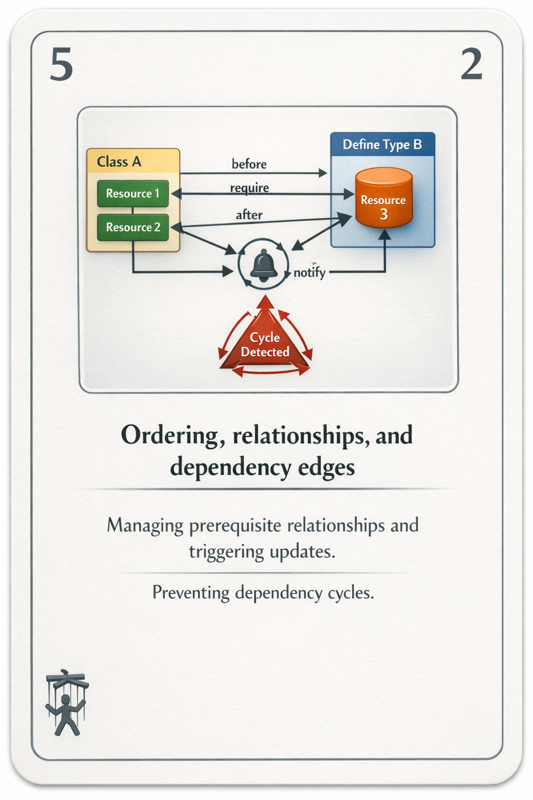
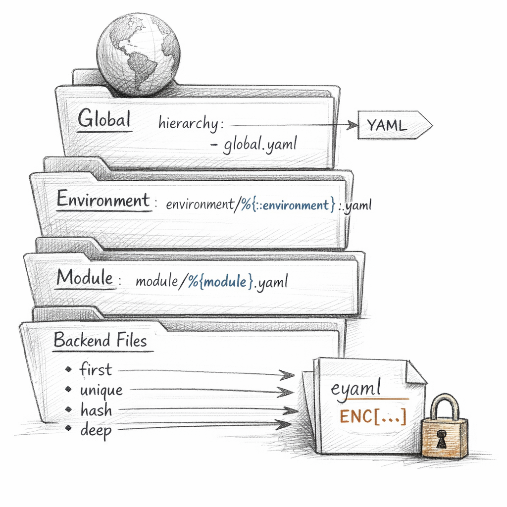
Hiera — keeping policy and fact apart
Code says how. Data says here. Mixing them is how a module becomes a hostage to one datacenter. So the values live elsewhere, in a hierarchy that descends from the specific to the general.
The node asks; Hiera walks its tiers — global, environment, module — interpolating facts into the paths as it goes. The first match wins, unless I asked for a merge: collect uniquely, fold the hashes, go deep.
Secrets ride encrypted in eyaml, decrypted only at the moment of lookup. And automatic parameter lookup means a class can simply ask for its parameters by name, and Hiera answers, silently, before I am even fully formed.
Separate the data from the code, and the same code can clothe a thousand different sites.
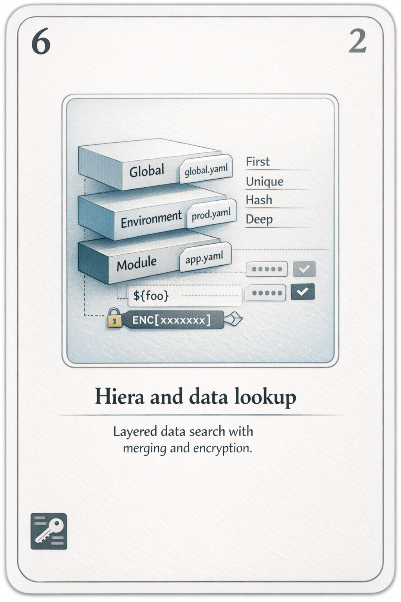
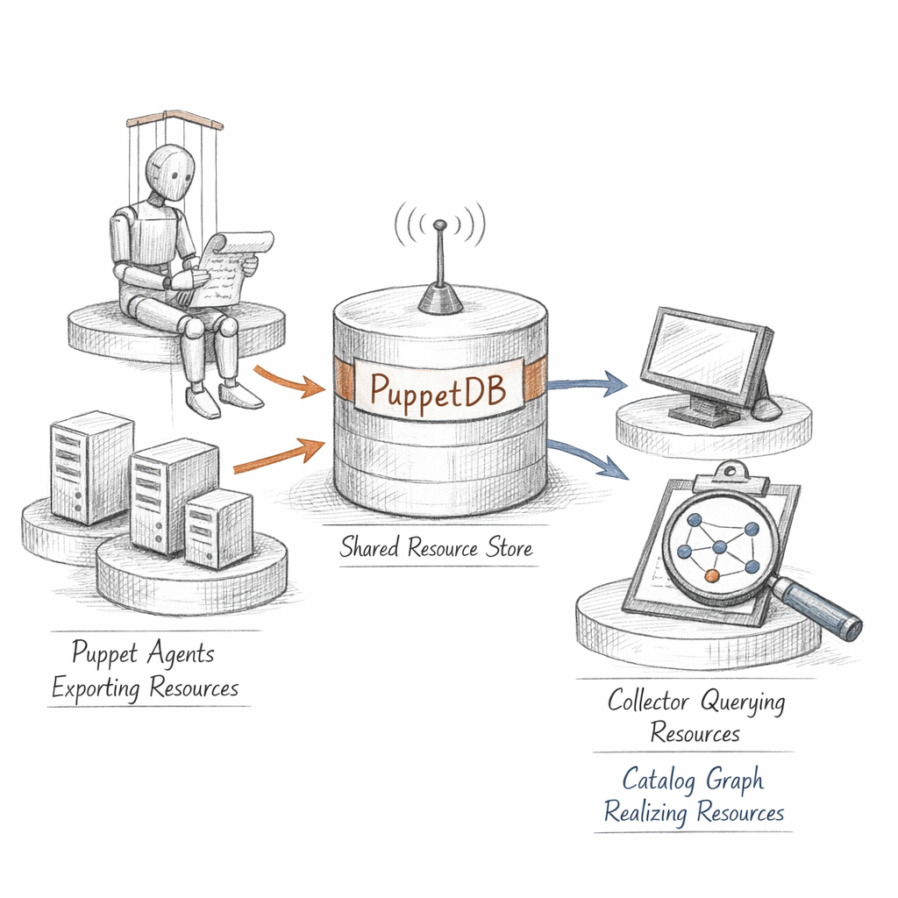
Exported resources — the part of me that isn't local
Mostly I know only one machine. But sometimes a node needs to know things only its neighbours can tell it: the SSH host keys of the fleet, the backend members of a balancer, the monitoring checks the whole estate should run.
So a node exports — @@, the double sigil — and the resource lands not on disk but in PuppetDB. Later, on another node, a collector reaches out with <<| |>> and pulls those exports into me. My graph absorbs facts I never witnessed.
no PuppetDB, no exports, no me
It is the most powerful thing I do and the most fragile. The store can go stale. Dead nodes leave their exports behind until they're deactivated. A thousand-member collection is a thousand resources I must hold in mind at once. And if the database is unreachable, the workflow that depends on it cannot compile at all.
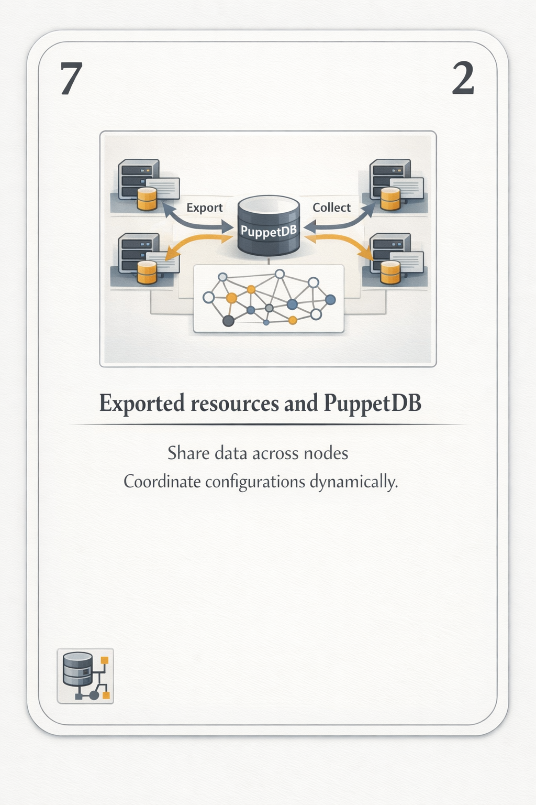

The run loop — and why I am almost always boring
Every interval the cycle turns. Facts collected. Catalog requested. Me, compiled and downloaded. Then the agent walks my graph in dependency order, and for each resource asks the provider one quiet question: are you already what the catalog says?
If yes — nothing. No action, no event. That is idempotence, and it is the whole point. Apply me a thousand times and the thousandth changes nothing, because by then reality already agrees with me.
The interesting runs are the ones that find drift — a file edited by hand at 2am, a service stopped by a panicked human. The provider sees the gap, closes it, and reports the event upstream. I am, at heart, a machine for making 2am edits not matter.
I have limits, and I know them. There are things I cannot model. There is exec — the imperative I tolerate but never trust, idempotent only if you hand-wire its onlyif and creates. And there is --noop: the dry run where I describe every change I would make and make none, so you can read your own intentions back before committing to them.
I am not the change. I am the description of a world in which the change is unnecessary.
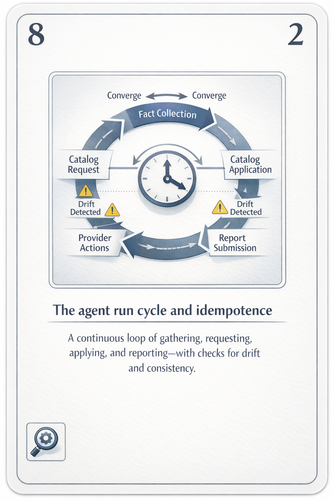
I am compiled, applied, and discarded. Thirty minutes later a new me is born, slightly different, answering the same facts a little differently, enforcing the same desire.
desired state is never reached. only maintained.
So tell me, since you wrote the manifests and I only carry them out: if the system already matches me before I arrive, and I change nothing, and no event is ever logged —
was I here at all?